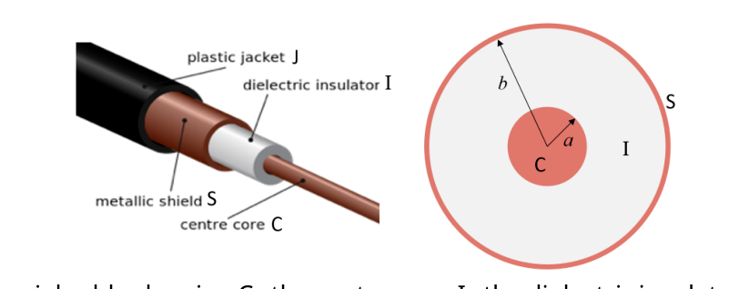
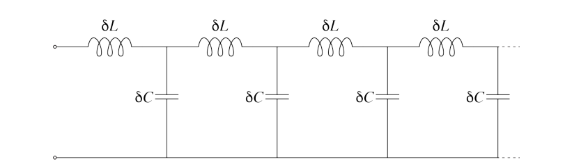
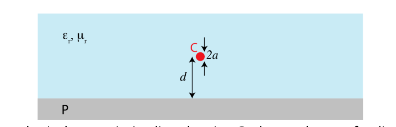
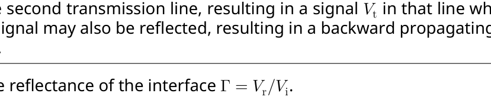
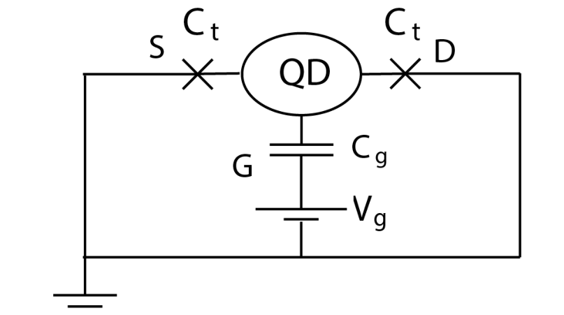
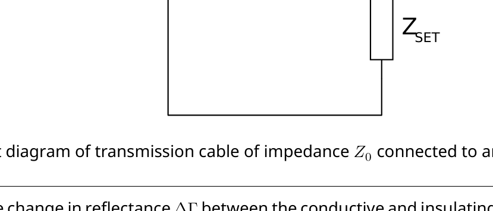
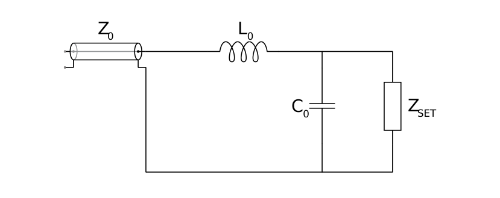
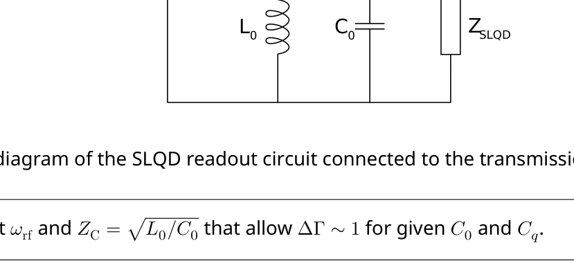

RF reflectometry for spin readout for silicon quantum computing
Introduction
Developing the idea of quantum computing into a practical technology is one of the largest outstanding challenges in science and technology. A promising path is to manipulate individual electrons in silicon transistors by time-dependent electromagnetic fields.
In this question, we investigate the use of radio frequency (RF) reflectometry and single-electron transistors to read out the state of quantum bits in silicon-based quantum computer prototypes.
Part A and Part B discuss radio wave transmission through cables and transmission lines, part C is devoted to conditions for wave reflection, part D introduces the single-electron transistor, and parts E and F introduce and ask you to optimise the method of reflectometry.
Part A: Lumped element model of a co-axial transmission line (2.0 points)
When modelling DC or low frequency signals, one often assumes that a voltage pulse travels instantaneously throughout the circuit. This assumption is valid when the wavelength of such signals is much longer than the size of the circuit, however when working with radio frequency signals, the dynamics are more complex, and we need to account for the intrinsic capacitance and inductance of our cables in our model. We model a co-axial transmission line which acts as a waveguide as described below, ignoring the small resistance of the copper and the small conductance through the dielectric. Throughout the problem, we consider the large-wavelength limit of electromagnetic waves in the co-axial cable such that electric and magnetic fields are perpendicular to the axis of the cable everywhere (the so-called transverse electromagnetic mode).

Diagram of a coaxial cable showing C — the centre core, I — the dielectric insulator, S — the metallic shield and J — the plastic jacket.Consider a co-axial cable consisting of a copper inner core of negligible resistance, negligible magnetic permeability and radius , covered by an outer co-axial copper shield with inner radius . A dielectric of dimensionless relative permittivity and dimensionless relative permeability separates the layers. When electromagnetic signals propagate through the co-axial cable, they are confined between the inner core and outer shielding.
A.1 At what speed do electromagnetic waves propagate in the co-axial cable? (0.2pt)
A.2 If there is a charge on a length of the inner core of the co-axial cable, and the outer shield is grounded, find the electric field in the region between the inner core and the shield. (0.2pt)
A.3 Find the capacitance per unit length, , of the co-axial cable. You may wish to consider a length of the cable. (0.3pt)
A.4 Find the inductance per unit length, , of the cable. (0.3pt)
A lumped element model of the cable is constructed by considering the inductance and capacitance of short sections of the cable. The inductance is assumed to be a property of the inner core, and the capacitance links the core with the shielding. A diagram of the lumped element model is shown below.

Circuit diagram of lumped element model of coaxial cable.A.5 i. Show that the impedance of a semi-infinite length of cable is . ii. Find if the cable has impedance and is made using a dielectric material with and . (1.0pt)
Part B: Hypothetical transmission line with return along a grounded plane (1.0 points)
An alternative hypothetical transmission line is shown in the diagram below. The input signal is sent through a very thin conductor of radius , which is a distance from a highly conductive grounded plane. The material surrounding the conductor has dimensionless relative permittivity and dimensionless relative permeability . The return current flows along the grounded plane.

Diagram of a hypothetical transmission line showing C — the conductor of radius , at a distance from P — the grounded conducting plane. The conductor is embedded in a material with dimensionless relative permittivity and dimensionless relative permeability .B.1 Find an expression for the characteristic impedance of this hypothetical transmission line. (1.0pt)
Part C: Basics of RF reflectometry (1.2 points)
An electromagnetic wave can propagate in a transmission line in two opposite directions. For each direction of propagation, the characteristic impedance can be used to relate the voltage and current amplitudes as in the Ohm’s law, .
Consider an interface between two transmission lines, with characteristic impedances and . A schematic diagram of the circuit is shown below.

Circuit diagram of a transmission line of impedance connected to a transmission line of impedance . The physical size of the interface is much smaller than the wavelength.When a signal sent into the transmission line with impedance reaches the interface it is partially transmitted into the second transmission line, resulting in a signal in that line which propagates forward. Some of the signal may also be reflected, resulting in a backward propagating signal in the initial transmission line .
C.1 Find the reflectance of the interface . (1.0pt)
C.2 State the condition(s) for the signal to have gained a phase change on reflection. (0.2pt)
Part D: The single electron transistor (3.3 points)
A single electron transistor (SET) consists of a quantum dot, which is a small isolated conductor where electrons can be localised, and of several electrodes in its vicinity. The gate electrode couples capacitatively to the quantum dot, while the two other electrodes — the source and the drain — are connected via tunnel junctions, through which electrons can tunnel due to quantum mechanics. A simplified circuit diagram for an SET is shown in the figure.

Circuit diagram representation of an SET. QD is the quantum dot, S is the source, D is the drain and G is the gate.The capacitance of the gate is and the capacitance of the tunnel junctions is . Consider to be the total capacitance of the quantum dot. In this part of the problem, the source and the drain are held at zero potential, and the voltage on the gate electrode is fixed at .
D.1 Consider a state of the SET in which the quantum dot contains electrons. i. Find the electrical potential on the QD. ii. Find the amount of energy that is necessary to bring an additional electron from the source or the drain onto the QD. (1.5pt)
If then electrons will spontaneously tunnel into the quantum dot until such a number is reached that . The equilibrium number of electrons and the corresponding addition energy can be controlled by choosing the appropriate voltage .
D.2 Find an expression for the maximal possible value of the equilibrium addition energy that can be achieved by tuning the gate voltage of the SET. (0.5pt)
If then tunnelling of electrons does not require extra energy and SET is in a highly conductive ON state. If , then the conductance of the SET is reduced (high-resistance OFF).
For the number of electrons on the quantum dot to remain well-defined, certain conditions need to be satisfied. Firstly, if electrons in the source or drain have thermal energies sufficient to move spontaneously onto the quantum dot, the contrast between the ON and OFF states will disappear.
D.3 Find a condition on the temperature of the electrons so that electrons cannot move onto the quantum dot by thermal excitation. (0.5pt)
Secondly, tunnelling of electrons onto or off the dot limits the lifetime of their energy states. This tunnelling can be modelled using an effective resistance of the tunnel junction with the characteristic tunnelling time equal to the characteristic time for charging or discharging the quantum dot through the junction.
D.4 i. Estimate the tunnelling time for a quantum dot in terms of capacitance and effective resistance of the tunnel junction. ii. Find a condition on the effective resistance so that the electrons in the quantum dot retain sufficiently well-defined energy for the ON and OFF states to remain distinct. (0.8pt)
Part E: RF reflectometry to read out SET state (1.0 points)
The state of the SET is sensitive to electrical potentials created by nearby elements of the quantum circuit (such as quantum bits), and distinguishing between ON and OFF states provides a way to read out the information produced by the quantum computer. The SET in the ON state can be modelled by a resistance while in the OFF state we can assume the SET to be a complete insulator (neglecting any capacitative connection between the source and the drain via the SET). While it is possible to determine the state of the SET by measuring the response to an input signal through the source, it is faster to do so using RF reflectometry to measure both the amplitude and phase of the reflected signal, i.e. determined the reflectance .
The change in reflectance due to switching of an SET between ON and OFF states is
\Delta\Gamma = |\Gamma_{\text{ON}} - \Gamma_{\text{OFF}}|, \tag{1}
where and are the reflectances in two different states.

Circuit diagram of transmission cable of impedance connected to an SET.E.1 Find the change in reflectance between the conductive and insulating states for a typical SET connected to a co-axial cable with impedance of . (0.2pt)
In order to increase the change in reflectance, and hence the sensitivity of the RF reflectometry, the circuit is modified by inclusion of an inductor. The intrinsic capacitance due to the device geometry is also taken into account. The RF reflectometry is conducted using a signal of angular frequency .

Modified SET circuit.E.2 Estimate the value of the inductance that can result in the change in reflection on the order of one. Calculate your estimate for numerically for and compute the corresponding . (0.8pt)
Part F: Charge sensing with a single lead quantum dot (1.5 points)
For a scalable quantum computing architecture, the number of wires reaching each individual quantum bit need to be minimized. A promising alternative to an SET for charge sensing in silicon quantum computing is a Single Lead Quantum Dot (SLQD). In many ways it is similar to an SET, but does not have the source and drain leads. The gate is the only electrode, through which the electron energy states of the quantum dot are controlled and also through which RF reflectometry is conducted.
Like an SET, a SLQD has an OFF in which the SLQD behaves as a total insulator. In contrast to an SET, the ON state of the SLQD is capacitive, with capacitance . In order to maximize the difference in reflectance of the SLQD, the following circuit is constructed. The parasitic capacitance is fixed by circuit geometry, but the value of and the operating frequency can be changed to optimize the performance. The characteristic impedance of the transmission line is .

Circuit diagram of the SLQD readout circuit connected to the transmission line.F.1 Suggest and that allow for given and . (1.0pt)
Optimal values of are relatively large and not always technically feasible. Hence, other types of circuit elements may be needed to improve sensitivity of the reflectometry readout circuit.
F.2 Assume that (and hence ) is fixed. Draw a circuit diagram showing where to place an additional element in the SLQD readout circuit and specify the parameter(s) of this element such that can still be achieved without requiring a large inductance. (0.5pt)
Fonte: Testo (PDF) — p.1
Topic: Circuits, Electromagnetism, Modern-Quantum Physics Metodi: Equivalent Circuit Reduction, Gauss’s Law, Ampère’s Law, Electric Potential Method Competenze: Mathematical Modeling, Physical Reasoning, Estimation & Approximation Objects: Wire, Capacitor, Inductor, Resistor
Refletometria RF per la lettura di spin per il calcolo quantistico del silicio
Introduzione
Sviluppare l’idea di calcolo quantistico in una tecnologia pratica è una delle più grandi sfide in sospeso nella scienza e nella tecnologia. Un percorso promettente è quello di manipolare singoli elettroni nei transistor di silicio con campi elettromagnetici dipendenti dal tempo.
In questa domanda, si indaga sull’uso della rifletometria a radio frequenza (RF) e dei transistor a singolo elettrone per leggere lo stato dei bit quantistici nei prototipi di computer quantistici a base di silicio.
La parte A e la parte B discutono la trasmissione delle onde radio attraverso cavi e linee di trasmissione, la parte C è dedicata alle condizioni per la riflessione delle onde, la parte D introduce il transistor a singolo elettrone e le parti E e F introducono e chiedono di ottimizzare il metodo di riflettimometria.
Parte A: Modello di elemento agglomerato di una linea di trasmissione coassiale (2.0 punti)
Quando si modella i segnali a corrente continua o a bassa frequenza, si assume spesso che un impulso di tensione viaggia istantaneamente attraverso il circuito. Questa ipotesi è valida quando la lunghezza d’onda di tali segnali è molto più lunga della dimensione del circuito, tuttavia quando si lavora con segnali di radio frequenza, la dinamica è più complessa e dobbiamo tenere conto della capacità intrinseca e dell’induttanza dei nostri cavi nel nostro modello. Modelliamo una linea di trasmissione coassiale che agisce come una guida d’onda come descritto di seguito, ignorando la piccola resistenza del rame e la piccola conduttività attraverso il dielettrico. Nel corso del problema, consideriamo il limite di lunghezza d’onda delle onde elettromagnetiche nel cavo coassiale in modo tale che i campi elettrici e magnetici siano perpendicolari all’asse del cavo ovunque (la cosiddetta modalità elettromagnetica trasversale).
Diagramma di un cavo coassiale che mostra C il nucleo centrale, I l’isolatore dielettrico, S lo scudo metallico e J la giacca di plastica.
Si consideri un cavo coassiale costituito da un nucleo interno di rame di resistenza trascurabile, permeabilità magnetica trascurabile e raggio , coperto da uno scudo copro coassiale esterno con raggio interno . Un dielettrico di relativa permitabilità dimensionaria e di relativa permeabilità dimensionaria separa gli strati. Quando i segnali elettromagnetici si propagano attraverso il cavo coassiale, essi sono confinati tra il nucleo interno e lo scudo esterno.
A. A che velocità si propagano le onde elettromagnetiche nel cavo coassiale? (0.2pt)
Se c’è una carica su una lunghezza del nucleo interno del cavo coassiale e lo scudo esterno è a terra, trovare il campo elettrico nella regione tra il nucleo interno e lo scudo. (0.2pt)
A.3 Trova la capacità per unità di lunghezza, , del cavo coassiale. Potrebbe essere opportuno considerare una lunghezza del cavo. (0.3pt)
**A.4 ** Trova l’induttanza per unità di lunghezza, , del cavo. (0.3pt)
Un modello di elemento montato del cavo viene costruito tenendo conto dell’induttanza e della capacità di sezioni brevi del cavo. Si presume che l’induttanza sia una proprietà del nucleo interno e che la capacitanza collega il nucleo al schermo. Un diagramma del modello di elementi agglomerati è mostrato di seguito.
Diagramma di circuito del modello di elemento a forma di un’insieme di cavo coassiale.
A.5 i. Indicare che l’impedenza di una lunghezza semipermanente del cavo è . ii. Trova se il cavo ha impedanza e è realizzato utilizzando un materiale dielettrico con e . (1.0pt)
Parte B: linea di trasmissione ipotetica con ritorno lungo un piano a terra (1,0 punti)
Una linea di trasmissione ipotetica alternativa è mostrata nel diagramma di seguito. Il segnale di ingresso viene inviato attraverso un conduttore molto sottile di raggio , che è una distanza da un piano terraficato altamente conduttivo. Il materiale che circonda il conduttore ha una permissività relativa senza dimensioni e una permeabilità relativa senza dimensioni . La corrente di ritorno scorre lungo il piano a terra.
Diagramma di una linea di trasmissione ipotetica che mostra C il conduttore del raggio , a distanza da P il piano conduttore a terra. Il conduttore è incorporato in un materiale con permitabilità relativa senza dimensioni e permeabilità relativa senza dimensioni .
B.1 Trova un’espressione per l’impedenza caratteristica di questa linea di trasmissione ipotetica. (1.0pt)
Parte C: Basi della rifletometria RF (1,2 punti)
Un’onda elettromagnetica può propagarsi in una linea di trasmissione in due direzioni opposte. Per ogni direzione di propagazione, l’impedenza caratteristica può essere utilizzata per correlare le amplitudini di tensione e corrente come nella legge di Ohm, .
Si consideri un’interfaccia tra due linee di trasmissione, con impedanze caratteristiche e . Un diagramma schematico del circuito è mostrato di seguito.
Diagramma di circuito di una linea di trasmissione di impedanza collegata a una linea di trasmissione di impedanza . La dimensione fisica dell’interfaccia è molto più piccola della lunghezza d’onda.
Quando un segnale inviato nella linea di trasmissione con impedanza raggiunge l’interfaccia, esso viene trasmesso in parte nella seconda linea di trasmissione, dando luogo a un segnale in quella linea che si propaga in avanti. Alcune parti del segnale possono anche essere riflettute, dando luogo a un segnale di propagazione all’indietro nella linea di trasmissione iniziale .
C.1 Trova la riflessione dell’interfaccia . (1.0pt)
C.2 Indicare la condizione (s) per il segnale di aver ottenuto un cambiamento di fase sulla riflessione. (0.2pt)
Parte D: Il transistor a singolo elettrone (3,3 punti)
Un singolo transistor elettronico (SET) è costituito da un punto quantistico, che è un piccolo conduttore isolato dove gli elettroni possono essere localizzati, e da diversi elettrodi nelle sue vicinanze. L’elettrodo di cancello si accoppia capacitativamente al punto quantistico, mentre gli altri due elettrodi la fonte e il drenaggio sono collegati attraverso le giunzioni di tunnel, attraverso i quali gli elettroni possono tunnelare a causa della meccanica quantistica. Il diagramma di circuito semplificato per un SET è mostrato nella figura.
Rippresentazione del diagramma di circuito di un SET. QD è il punto quantistico, S è la fonte, D è la scarico e G è la porta.
La capacità della porta è e la capacità delle unioni del tunnel è . Considera la capacità totale del punto quantistico. In questa parte del problema, la fonte e il drenaggio sono tenuti a potenziale zero e la tensione sull’elettrodo di cancello è fissata a .
D.1 Considera uno stato del SET in cui il punto quantistico contiene elettroni. i. Trova il potenziale elettrico sul QD. ii. Trova la quantità di energia necessaria per portare un elettrone aggiuntivo dalla fonte o dal drenaggio sul QD. (1.5pt)
Se allora gli elettroni si trascineranno spontaneamente nel punto quantistico fino a raggiungere un tale numero che . Il numero di equilibrio di elettroni e la corrispondente energia di aggiunta possono essere controllati scegliendo la voltazione appropriata .
D.2 Trova un’espressione per il valore massimo possibile dell’energia di aggiunta di equilibrio che può essere ottenuta regolaendo la tensione di portale del SET. (0.5pt)
Se , il tunnelamento degli elettroni non richiede energia aggiuntiva e SET è in uno stato di ON altamente conduttivo. Se , la conduttività del SET è ridotta (OFF ad alta resistenza).
Per mantenere un numero di elettroni nel punto quantistico ben definito, occorrono soddisfare determinate condizioni. In primo luogo, se gli elettroni nella fonte o nel drenaggio hanno energie termiche sufficienti a spostarsi spontaneamente sul punto quantistico, il contrasto tra gli stati ON e OFF scomparirà.
**D.3 ** Trova una condizione sulla temperatura degli elettroni in modo che gli elettroni non possano spostarsi sul punto quantistico mediante eccitazione termica. (0.5pt)
In secondo luogo, il tunnelamento degli elettroni su o fuori il punto limita la durata degli stati energetici. Tale tunnelizzazione può essere modellata utilizzando una resistenza efficace della giunzione del tunnel con il tempo di tunnelamento caratteristico pari al tempo caratteristico per la carica o il scarico del punto quantistico attraverso la giunzione.
D.4 i. Calcolare il tempo di tunnelamento di un punto quantistico in termini di capacità e resistenza effettiva della giunzione del tunnel. ii. Trova una condizione sulla resistenza effettiva in modo che gli elettroni nel punto quantistico conservino energia sufficientemente ben definita per mantenere gli stati di ON e OFF distinti. (0.8pt)
Parte E: rifletometria RF per leggere lo stato SET (1,0 punti)
Lo stato del SET è sensibile ai potenziali elettrici creati da elementi vicini del circuito quantistico (come i bit quantistici), e distinguere tra stati ON e OFF fornisce un modo per leggere le informazioni prodotte dal computer quantistico. Il SET nello stato ON può essere modellato con una resistenza mentre nello stato OFF possiamo presumere che il SET sia un isolante completo (negliendone qualsiasi connessione capacitativa tra la fonte e il drenaggio tramite il SET). Mentre è possibile determinare lo stato del SET misurando la risposta a un segnale di input attraverso la sorgente, è più veloce farlo utilizzando la riflettometria a RF per misurare sia l’ampiezza che la fase del segnale riflettuto, ovvero. determinato il rifletto .
La variazione della riflettività dovuta al passaggio di un SET tra stati ON e OFF è
\Delta\Gamma = |\Gamma_{\text{ON}} - \Gamma_{\text{OFF}}|, \tag{1}
dove e sono le riflessioni in due stati diversi.
Diagramma di circuito di cavo di trasmissione di impedanza collegato a un SET.
E.1 Trova il cambiamento di riflettività tra gli stati conduttori e isolanti per un SET tipico collegato a un cavo coassiale con impedenza . (0.2pt)
Per aumentare il cambiamento di riflettività e quindi la sensibilità della rifletometria RF, il circuito viene modificato con l’inclusione di un induttore. Si tiene conto anche della capacità intrinseca derivante dalla geometria del dispositivo . La rifletometria RF è effettuata utilizzando un segnale di frequenza angolare .
Circuito SET modificato.
E.2 Estimare il valore dell’induttanza che può comportare il cambiamento della riflessione nell’ordine di uno. Calcolare numericamente la stima per per e calcolare la corrispondente . (0.8pt)
Parte F: Senzore di carica con un singolo punto quantistico di piombo (1,5 punti)
Per un’architettura di calcolo quantistico scalabile, il numero di fili che raggiungono ogni singolo bit quantistico deve essere ridotto al minimo. Un’alternativa promettente a un SET per la rilevazione della carica nel calcolo quantistico del silicio è un singolo punto quantistico di piombo (SLQD). In molti modi è simile a un SET, ma non ha la fonte e le condotte di scarico. Il gate è l’unico elettrodo attraverso il quale vengono controllati gli stati di energia elettronica del punto quantistico e anche attraverso il quale viene condotta la rifletometria RF.
Come un SET, un SLQD ha un OFF in cui il SLQD si comporta come isolante totale. In contrasto con un SET, lo stato ON del SLQD è capacitivo, con capacità . Per massimizzare la differenza di riflettività del SLQD, viene costruito il seguente circuito. La capacità parassitaria è fissata dalla geometria del circuito, ma il valore di e la frequenza di funzionamento possono essere modificati per ottimizzare le prestazioni. L’impedenza caratteristica della linea di trasmissione è .
Diagramma di circuito del circuito di lettura SLQD collegato alla linea di trasmissione.
F.1 Suggerire e che consentano per i dati e . (1.0pt)
I valori ottimali di sono relativamente grandi e non sempre tecnicamente fattibili. Pertanto, possono essere necessari altri tipi di elementi di circuito per migliorare la sensibilità del circuito di lettura della riflettimmetria.
F.2 Supponiamo che (e quindi ) sia fisso. Disegnare un diagramma di circuito che indichi dove inserire un elemento aggiuntivo nel circuito di lettura SLQD e specificare i parametri di questo elemento in modo che possa essere ancora ottenuto senza richiedere una grande inductanza. (0.5pt)
Fonte: Testo (PDF) — p.1
Topic: Circuits, Electromagnetism, Modern-Quantum Physics Metodi: Equivalent Circuit Reduction, Gauss’s Law, Ampère’s Law, Electric Potential Method Competenze: Mathematical Modeling, Physical Reasoning, Estimation & Approximation Objects: Wire, Capacitor, Inductor, Resistor